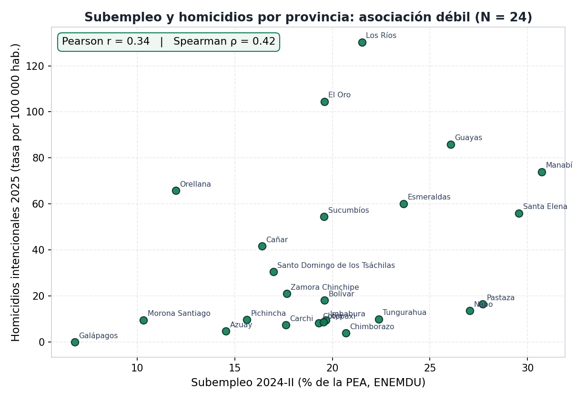
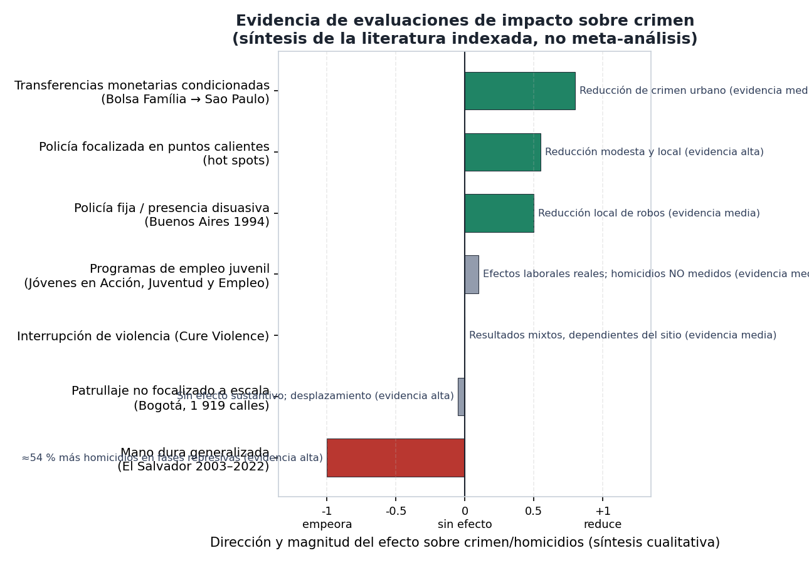

📌 Pregunta de investigación
¿Cómo evolucionó la criminalidad letal (homicidios por 100 000 habitantes) en las provincias de Ecuador entre 2018 y 2026, y qué asociación (no causal) guarda con el deterioro del mercado laboral (desempleo y subempleo por provincia), controlando por heterogeneidad geográfica y temporal?
📊 Hallazgos principales
1. Explosión de homicidios con récord en 2025
La serie nacional pasó de 996 víctimas (2018) a 9 283 (2025); el primer semestre de 2026 suma 4 154. Guayas concentra el 44,2 % del periodo 2018–2025.

2. La ola es nacional, no solo Guayas
Sin Guayas, el crecimiento interanual se mantiene (2025 vs 2024: +34,7 %). El deterioro se extendió a la Costa y la frontera norte.

3. La escalada precedió a los decretos de 2024
El event study del Decreto 111 (ene-2024) no muestra efectos diferenciales significativos; el placebo (2021-Q1) es plano en t≈0 y su repunte tardío coincide con 2023-Q1, inicio real de la ola.

4. Sin efectos espurios: placebo plano
El pseudo-tratamiento en 2021-Q1 no responde en t≈0, lo que refuerza que el diseño no fabrica "efectos" donde no los hay.

🧪 Modelos econométricos y resultados
Esta sección resume las especificaciones econométricas del proyecto y sus estimaciones puntuales. La interpretación se ciñe a la variación identificada por cada diseño: el marco es observacional, con control de heterogeneidad geográfica y temporal, y no permite atribución causal; así se declara en cada estimador.
Asociación transversal (ENEMDU 2024-II vs letalidad 2025, N = 24)
- Correlación de Pearson entre tasa de subempleo y tasa de homicidios 2025: r = 0,34; coeficiente de Spearman: ρ = 0,42.
- Desempleo abierto: |r| ≤ 0,18. Estadísticos descriptivos de corte transversal: no controlan por confusores observados ni no observados.
Efectos fijos y límites de identificación
- Con un único corte de ENEMDU (2024-II), los efectos fijos de provincia y periodo absorben por construcción la variación laboral: los coeficientes laborales no son identificables y se estima una especificación de mínimos cuadrados con efectos regionales y errores estándar agrupados por provincia.
- Desempleo: β ≈ +0,08 (p ≈ 0,39); subempleo: β ≈ −0,04 (p ≈ 0,47). Ningún coeficiente es estadísticamente distinguible de cero al 5 %.
- La identificación del canal laboral exige un panel provincial trimestral (2018–2026); su ausencia se documenta como limitación del diseño.
Estudio de eventos en torno al Decreto 111
- Dummies de trimestre relativo interactuadas con el grupo tratado (tercil superior del índice de debilidad laboral 2024-II), efectos fijos de provincia y periodo, errores agrupados por provincia.
- Ningún βk posterior a 2024-Q1 es estadísticamente significativo: no se detecta respuesta diferencial atribuible al decreto dentro de la muestra.
- Placebo con pseudo-tratamiento en 2021-Q1: coeficientes planos en t ≈ 0; el repunte tardío coincide con 2023-Q1, inicio de la escalada real y anterior a la política.
Control sintético: Esmeraldas
- Pesos estimados por minimización del error cuadrático medio pre-tratamiento (método de control sintético; Abadie, Diamond & Hainmueller, 2010): ajuste RMSE = 4,78 homicidios/100 000.
- Brecha media posterior al Decreto 111: −4,87/100 000; la provincia observada se mantiene por debajo de su contrafactual sintético. Resultado descriptivo: sin distribución de placebo no constituye inferencia formal.
Validez externa: contraste con OECO
- Boletín semestral S1-2025 (OECO/PADF): 4 619 homicidios; agregación del registro oficial en este proyecto: 4 659 (Δ ≈ +0,9 %), atribuible a cortes de fecha y depuración de duplicados.
- El contraste se cita de forma parafraseada, sin reproducción literal del texto fuente.
📚 Evidencia empírica y política pública
Sección basada en el anexo del proyecto (~110 referencias académicas indexadas: Springer, Elsevier, JSTOR, Oxford, Cambridge, NBER/IZA, BID), con todos los DOIs verificados contra Crossref (revisión independiente: 62/62).
💡 Insights de la literatura
Desempleo ↔ crimen: fuerte para robos, débil para homicidios
La asociación desempleo-delincuencia es robusta para delitos patrimoniales (Chiricos, 1987; Raphael & Winter-Ebmer, 2001; Gould et al., 2002) pero frágil o nula para homicidios en paneles internacionales (Fajnzylber et al., 2002). Coherente con este proyecto: Pearson r = 0,34 y efectos fijos laborales no significativos.
Los picos de homicidios en la región no son laborales
México, Colombia y Centroamérica muestran que la letalidad se explica por mercados ilegales, fragmentación de grupos y capacidad estatal (Dell, 2015; Castillo et al., 2020; Lessing, 2015, 2021; Osorio, 2015), no por el desempleo agregado. Ecuador 2021–2025 encaja en ese patrón.
El canal laboral opera por costo de oportunidad
Shocks que reducen el ingreso lícito aumentan el conflicto y el reclutamiento (Dube & Vargas, 2013); la exposición infantil a mercados laborales ilegales forma carreras criminales de largo plazo (Sviatschi, 2022a). Relevante para prevención juvenil, no para el nivel agregado de homicidios.
Las pandillas destruyen el empleo local
En territorios con gobernanza criminal, los residentes ganan ~USD 350 menos al mes y los trabajadores más calificados migran (Melnikov et al., 2025; Cruz, 2010): el mercado laboral lícito colapsa justo donde más se necesita.
La «mano dura» generalizada es contraproducente
En El Salvador (2003–2022), las fases represivas tuvieron ≈54 % más homicidios mensuales que las treguas (~17 767 homicidios atribuibles) (Escaño et al., 2025; Wolf, 2012; Jütersonke et al., 2009).
La ola ecuatoriana precede a los decretos
El event study del Decreto 111 (ene-2024) no muestra efectos diferenciales significativos y el placebo 2021-Q1 es plano en t≈0: la escalada 2021–2025 es anterior a la respuesta estatal formal (hallazgo de este proyecto).
📊 Gráficos de evidencia
Subempleo y homicidios por provincia (N = 24)

Evidencia de impacto de intervenciones sobre crimen

Serie nacional de homicidios 2018–2026
Mapa de tasas por provincia, 2025
🧮 Métodos robustos de inferencia causal (aplicados al caso Ecuador)
- DiD moderno con tratamiento escalonado (Callaway & Sant'Anna, 2021; Goodman-Bacon, 2021; de Chaisemartin & D'Haultfœuille, 2020): estimaría el efecto de los decretos por provincia, robusto a efectos heterogéneos; los decretos 55 (2025) y 424 (2026) aportan variación temporal adicional.
- Control sintético (Abadie & Gardeazabal, 2003; Abadie et al., 2010, 2015): ya aplicado a Esmeraldas en este proyecto (brecha media post-decreto −4,87 por 100 000); extensible a Guayas, Manabí y Los Ríos con distribución de placebo.
- Event study con pre-trends y wild bootstrap (Roth, 2022; MacKinnon & Webb, 2017): inferencia válida con solo 24 clústeres provinciales.
- RDD e IV (Imbens & Lemieux, 2008; Angrist & Pischke, 2009): para evaluar programas puntuales con umbrales de asignación o shocks exógenos.
- ML causal (Chernozhukov et al., 2018 — Double/Debiased ML; Wager & Athey, 2018 — causal forests): heterogeneidad del efecto por provincia con controles de alta dimensión.
- Requisito de datos: panel laboral provincial trimestral 2018–2026 (microdatos ENEMDU/ANDA) para identificar efectos fijos laborales; hoy el repositorio cubre 2024-II (limitación declarada).
🏛️ Recomendaciones para altos funcionarios de gobierno
1 · Datos y medición [Evidencia alta]
- Publicar microdatos ENEMDU provinciales trimestrales (el tabulado oficial no desagrega por provincia).
- Crear una unidad de evidencia y analítica en seguridad con acceso a registros administrativos.
- Estandarizar el registro de homicidios (fecha, lugar, tipo) y publicarlo con rezago corto.
2 · Seguridad [Evidencia alta/media]
- Policía focalizada en puntos calientes de letalidad (efectos modestos pero robustos; patrullaje no focalizado no funciona — Bogotá).
- Evitar «mano dura» generalizada (evidencia adversa en El Salvador).
- Monitorear el desplazamiento del crimen hacia provincias vecinas (Osorio, 2015; Blattman et al., 2021).
3 · Laboral y prevención [Evidencia media]
- Evaluar el Bono de Desarrollo Humano con estándares causales (Bolsa Família redujo crimen urbano en Brasil — Chioda et al., 2016).
- Programas de empleo juvenil focalizados en cantones de alta letalidad, con evaluación desde el diseño (efectos laborales reales; homicidios aún no medidos en la literatura).
- Prevención de reclutamiento escolarizada en territorios con gobernanza criminal (Sviatschi, 2022a/b; Melnikov et al., 2025).
4 · Institucionalidad [Evidencia alta]
- Evaluación de impacto obligatoria de las intervenciones del estado de excepción.
- Gestión por resultados interinstitucional (modelo Pacto por la Vida, Pernambuco — Ratton et al., 2014; evidencia descriptiva).
- Agenda de investigación con universidades y acceso a datos anonimizados.
📖 Referencias clave (todas indexadas, DOI verificado)
- Becker, G. S. (1968). Crime and Punishment: An Economic Approach. Journal of Political Economy. 10.1086/259394
- Ehrlich, I. (1973). Participation in Illegitimate Activities. Journal of Political Economy. 10.1086/260058
- Chiricos, T. (1987). Rates of Crime and Unemployment. Social Problems. 10.1525/sp.1987.34.2.03a00060
- Raphael, S. & Winter-Ebmer, R. (2001). Identifying the Effect of Unemployment on Crime. The Journal of Law and Economics. 10.1086/320275
- Fajnzylber, P., Lederman, D. & Loayza, N. (2002). What causes violent crime? European Economic Review. 10.1016/s0014-2921(01)00096-4
- Edmark, K. (2005). Unemployment and Crime: Is There a Connection? Scandinavian Journal of Economics. 10.1111/j.1467-9442.2005.00412.x
- Dell, M. (2015). Trafficking Networks and the Mexican Drug War. American Economic Review. 10.1257/aer.20121637
- Dube, O. & Vargas, J. F. (2013). Commodity Price Shocks and Civil Conflict: Evidence from Colombia. Review of Economic Studies. 10.1093/restud/rdt009
- Osorio, J. (2015). The Contagion of Drug Violence. Journal of Conflict Resolution. 10.1177/0022002715587048
- Lessing, B. (2015). Logics of Violence in Criminal War. Journal of Conflict Resolution. 10.1177/0022002715587100
- Lessing, B. (2021). Conceptualizing Criminal Governance. Perspectives on Politics. 10.1017/s1537592720001243
- Cruz, J. M. (2010). Central American maras. Global Crime. 10.1080/17440572.2010.519518
- Britto, D., Pinotti, P. & Sampaio, B. (2022). Job Loss, Unemployment Insurance and Crime in Brazil. Econometrica. 10.3982/ecta18984
- Melnikov, N., Schmidt-Padilla, C. & Sviatschi, M. M. (2025). Gangs, Labor Mobility, and Development. Econometrica. 10.3982/ecta21305
- Sviatschi, M. M. (2022a). Making a NARCO. Econometrica. 10.3982/ecta17082
- Sviatschi, M. M. (2022b). Spreading Gangs: Exporting US Criminal Capital to El Salvador. American Economic Review. 10.1257/aer.20201540
- Wolf, S. (2012). Mara Salvatrucha. Latin American Politics and Society. 10.1111/j.1548-2456.2012.00143.x
- Jütersonke, O., Muggah, R. & Rodgers, D. (2009). Gangs, Urban Violence, and Security Interventions in Central America. Security Dialogue. 10.1177/0967010609343298
- Blattman, C., Green, D., Ortega, D. & Tobón, S. (2021). Place-Based Interventions at Scale. JEEA. 10.1093/jeea/jvab002
- Blattman, C. & Annan, J. (2016). Can Employment Reduce Lawlessness and Rebellion? APSR. 10.1017/S0003055415000520
- Callaway, B. & Sant'Anna, P. H. C. (2021). Difference-in-Differences with multiple time periods. Journal of Econometrics. 10.1016/j.jeconom.2020.12.001
- Goodman-Bacon, A. (2021). Difference-in-differences with variation in treatment timing. Journal of Econometrics. 10.1016/j.jeconom.2021.03.014
- Imbens, G. & Lemieux, T. (2008). Regression discontinuity designs: A guide to practice. Journal of Econometrics. 10.1016/j.jeconom.2007.05.001
- Roth, J. (2022). Pretest with Caution. AER: Insights. 10.1257/aeri.20210236
- MacKinnon, J. & Webb, M. (2017). Wild Bootstrap Inference. Journal of Applied Econometrics. 10.1002/jae.2508
- Abadie, A. & Gardeazabal, J. (2003). The Economic Costs of Conflict: The Basque Country. AER. 10.1257/000282803321455188
- Ratton, J. L., Galvão, C. & Fernandez, M. (2014). Pact for Life and the Reduction of Homicides in Pernambuco. Stability. 10.5334/sta.dq
- Chioda, L. (2017). Stop the Violence in Latin America. Banco Mundial. 10.1596/978-1-4648-0664-3
- Jaitman, L. (ed.) (2017). The Costs of Crime and Violence in LAC. BID. 10.18235/0000615
- FMI (2024). Crime and Its Macroeconomic Impact in Ecuador. IMF WP 2024/358. 10.5089/9798400297724.002.a003
📄 Versión completa del anexo (3 capítulos, ~110 referencias, con nota metodológica de verificación) · ver en GitHub
📁 Estructura del repositorio
├── notebooks/ 05 notebooks CRISP-DM (01 comprensión → 05 evaluación) ├── notebook_sources/ versiones .py estilo jupytext (regeneran los .ipynb) ├── src/ config, loaders, data_prep, geoprocessing, panel_helpers ├── data/raw/ fuentes oficiales (INEC, Ministerio del Interior, IGM/CONALI) ├── data/processed/ panel provincia-trimestre y tasas ├── reports/figures/ gráficos generados por los notebooks ├── app.py app Streamlit interactiva └── requirements.txt
🔗 Enlaces
Repositorio y código
- GitHub: jordanvt18/ec-empleo-crimen
- README completo (fuentes con fechas, metodología, limitaciones)
- Notebooks ejecutados
- App Streamlit (ejecutar con
streamlit run app.py)
⚠️ Limitaciones
- Cobertura ENEMDU parcial: microdatos provinciales de un trimestre (2024-II); el resto del periodo requiere descarga (patrones documentados en el notebook 03).
- No es causalidad: los efectos fijos no eliminan variables omitidas (inversión en seguridad, grupos armados, migración, informalidad).
- Datos administrativos: los homicidios están sujetos a variaciones según el metadato oficial; Galápagos no reporta homicidios en 2026.
- Denominador proyectado: tasas por 100 000 con proyecciones INEC (revisión 2024, base Censo 2022), no conteos censales puntuales.